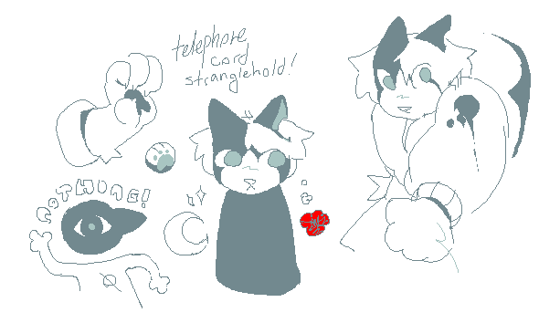
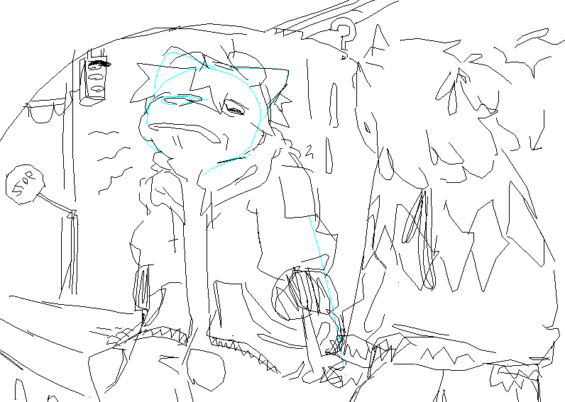

brush testing
 doodle from an aggie
doodle from an aggie

bunny girl appears

 was trying to fuck with clothing proportions but i ended up just drawing cc normally so
was trying to fuck with clothing proportions but i ended up just drawing cc normally soalso its funny how much my linework improved between this doodle and the previous one


 beans.
beans.

 original caption: "tip: mirror motifs can manifest in many ways. be wary of self-recognition in the other !"
original caption: "tip: mirror motifs can manifest in many ways. be wary of self-recognition in the other !"also cc doing what is presumably her best jesse pinkman impression
 i think was supposed to be part of a cover page
i think was supposed to be part of a cover page
fucking around with halftone textures